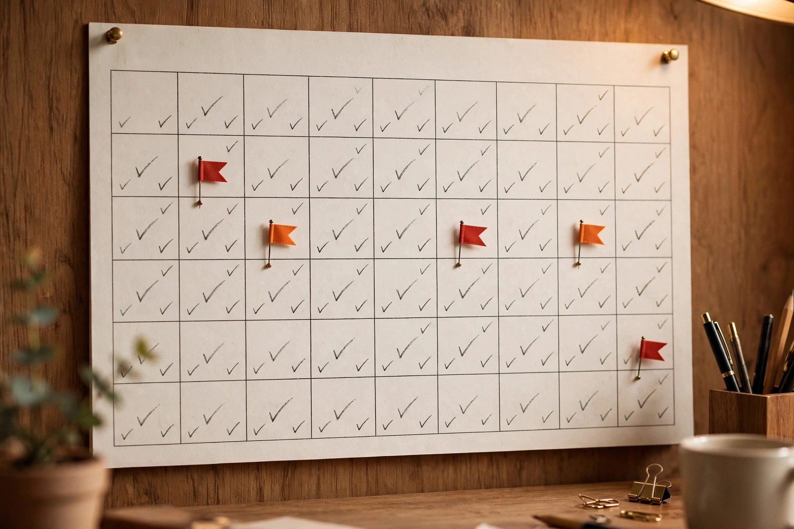

Quick answer
Most teams give up on ERP tools after two weeks. Here's how to build real adoption in 90 days: start small with one process, train hands-on with real work, make it easy to fix mistakes, and track usage instead of features. No fluff, no promises — just the plan that actually works.
Why adoption fails (it's not the software)
When I worked at a small manufacturing company, our ERP rollout was a disaster. We picked SAP Business One because it was cheap and seemed simple. But after two weeks, the sales team stopped using it. They'd just email orders instead of entering them into the system. The software worked fine. The adoption didn't.
I learned the hard way that ERP adoption isn't about installing the software — it's about getting your team to actually use it. And the reason most rollouts fail is that nobody plans the human side. The project plan covers configuration, migration, and training days. It does not cover what happens on day three when someone gets stuck, feels stupid, and quietly goes back to the spreadsheet. That moment — repeated across twenty people — is where implementations die.
Here is the psychology: people do not resist new systems because they are lazy. They resist because the new system makes them feel incompetent at a job they were good at yesterday. If the path back to competence is not fast and supported, she will find a workaround — and your ERP becomes a very expensive reporting tool that nobody feeds.
The 90-day plan below is built around one insight: adoption is a series of small wins, not one big launch. You are not rolling out software. You are rebuilding twenty people's daily habits, one habit at a time.
Days 1-30: One process, done well
The biggest mistake most teams make is trying to teach everyone everything at once. I remember a friend who tried to train 20 people on Odoo in a single workshop. Half of them were still confused by the basics after a week. The human brain does not absorb a whole ERP in a day, and pretending it can just creates twenty people who are confused about different things.
Instead, pick one process — the single most-used task in the system — and make the whole company good at it. For most businesses that is order entry or purchase orders: the thing people do ten times a day. Ignore everything else for now. The general ledger can wait. The fancy reports can wait. One process, done well, by everyone who touches it.
Run it as real work, not training. Do not do a workshop where people click through a demo. Take Tuesday's actual orders and enter them in the new system, with someone experienced sitting next to each person. When they get stuck — and they will — fix it together in under five minutes. The goal of month one is not proficiency. It is the moment each person thinks "okay, I can do this." That moment is worth more than any training manual. 
Pick your pilot group deliberately: two or three respected, adaptable people — not the enthusiasts, not the resistors. The respected middle. When they start saying "this is actually faster," the rest of the team listens.
By day 30, your one process should be running in the new system for real — not in parallel, not as a test. Real orders, real money, real consequences. That is the win that funds the next sixty days.
Days 31-60: Expand the circle
Month two adds the next two or three processes — the ones that touch the first one. If month one was order entry, month two is shipping and invoicing: the natural downstream flow. Each new process gets the same treatment: real work, side-by-side support, five-minute fixes.
This is where you build your super-users. The pilot group from month one now helps train the next wave. Teaching cements their own knowledge, and peer training lands differently than vendor training — "here's how I do it" beats "here's how the system works." Identify one super-user per department. Give them a direct line to whoever supports the system. Make them the first stop for questions, so problems get solved in minutes by someone nearby instead of becoming tickets that sit for days.
This is also where you fix mistakes instead of perfecting the system. When the sales team couldn't enter a certain order type, we created a quick workaround — a simplified entry screen with the fields they actually used. It wasn't the full solution, but it got them moving again. A fast imperfect fix that keeps people in the system beats a perfect fix that arrives after they've given up.
Days 61-90: Make it stick
Month three is about turning usage into habit and habit into culture. The system should now handle the core daily processes. What remains is the long tail: the month-end close in the new system, the quarterly reports, the edge cases that only come up occasionally.
Run the first full month-end close in the new system during this window — with the old system as a safety net, but the new system as the primary. The close will surface every gap: the missing report, the account that does not reconcile, the process nobody documented. That is the point. Better to find them in month three with a fallback than in month six without one.
Start measuring what matters. Tracking usage is something most teams overlook entirely. Many measure ERP success by how many features they've implemented — module count, user licenses, training hours. None of that is adoption. At my last company, we tracked login frequency and completed transactions. If someone logged in and completed orders, they were using it. If they logged in but didn't complete anything, we called it a "dead session" — and dead sessions told us exactly where the real problems were. A department with high logins and low completions does not need more training. It needs someone to watch them work and find the friction.
Set the expectation now: after day 90, the old system goes away. Not gradually — a date, announced in month two, with leadership visibly committed. As long as the old way exists, a fraction of the team will cling to it. The cutoff forces the last mile.
What to measure (and what to ignore)
Measure completions, not logins. Measure how many orders were entered in the system versus total orders — that ratio is your adoption rate, and it should climb every week. Measure time-to-competence for new processes: how many days from introduction to independent use. Measure support requests per user per week: high in month one (good, people are trying), declining by month three (good, people are learning). A spike in month three means something new broke — go find it.
Ignore feature utilization dashboards and training completion percentages — someone can complete every training module and still email their orders. The only metric that matters is whether the work happens in the system.
Frequently asked questions
How do I pick the right process to start?
Start with the most-used task — order entry, purchase orders, whatever people do ten times a day. Avoid complex workflows and edge cases for month one. The criteria: high frequency, clear steps, visible pain in the current process. If your sales team handles most orders, start there. The win has to be felt daily to build momentum.
What if my team hates the training?
Stop training and start working. Do it in real work sessions, not meetings — actual orders, actual data, someone experienced sitting alongside. Show them how to fix mistakes quickly. At my company, we ran short sessions where people tried to enter an order, and if they got stuck, we fixed it together in under five minutes. Nobody hates getting help with real work. Everybody hates workshops.
How do I know if adoption is happening?
Look at the data. If someone logs in and completes orders, they're using it. If they log in but don't complete anything, they're not. Track the ratio of system transactions to total transactions by department, weekly. That number climbing is adoption. Everything else is noise.
What if we have a lot of different systems?
Start with one system and one process. For example, if you use SAP Business One for sales and Odoo for inventory, pick one process in one system first. Don't try to integrate everything at once — integration is a month-six problem. Adoption is a month-one problem, and it needs focus, not breadth.